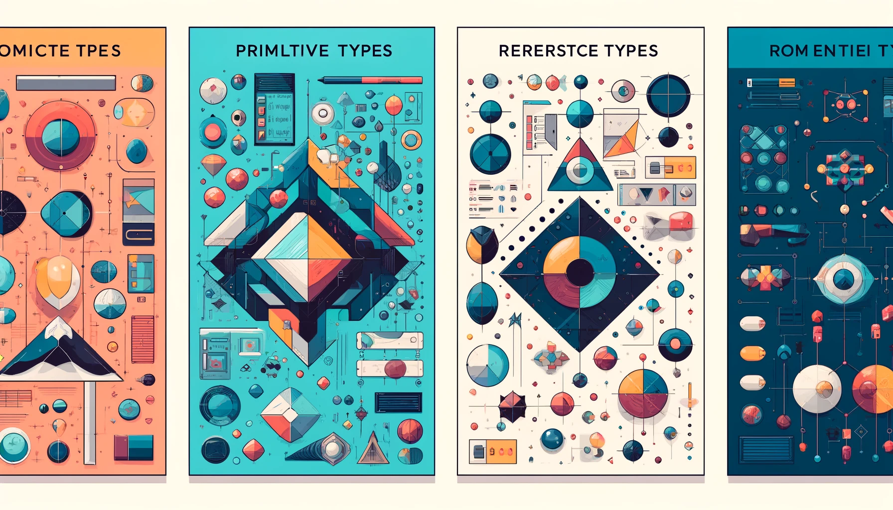

Java Script data types
Java Script data types can be broadly categorized into two types: primitive types and reference types

Primitive data types:
- Undefined: represents and uninitialized variable
- Null: Deliberate non-value
- Boolean: Represents a logical entity with two values
- Number: Integer and floating numbers in 64 bit binary precision
- BigInt: An integer with arbitrary precision. Useful for very large integers.
- String: Represents textual data. It's a sequence of characters.
- Symbol: A unique and immutable primitive value, often used to add unique property keys to an object.
Reference Types:
- Object: The base type for all complex structures in JavaScript. It can be used to store collections of named values.
- Array: Used to store ordered collections of values. Arrays in JavaScript are zero-indexed: the first element of an array is at index 0, and the last element is at the index equal to the value of the array's length property minus 1.
- Function: Functions are objects that have executable code associated with them. They can be passed around and executed when needed.
- BuiltInObjects: JavaScript also provides various built-in reference types like Date for handling dates and times, RegExp for regular expressions, and many others that facilitate various operations.